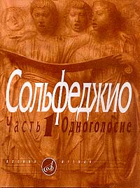
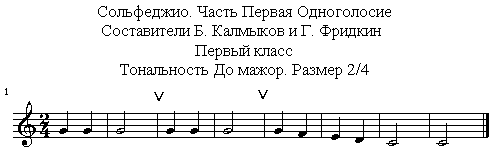

Ваш
ребёнок учится в музыкальной школе?
И бросает музыкальную школу
из-за сольфеджио?

НЕ СТОИТ ЭТО ДЕЛАТЬ. ВЫХОД ЕСТЬ:
"Аудио-тренажёр. Калмыков
Б., Фридкин Г. Сольфеджио. 1 класс".
"Аудио-тренажёр. Калмыков
Б., Фридкин Г. Сольфеджио. 2 класс".
Что это такое? Это напетые нотами номера в формате mp3, к которым приложена инструкция в 3-х вариантах: как разучивать номер?
Напетые нотами номера – недостающая половина к учебнику Сольфеджио, ваш проводник в мир музыкальных звуков.
Зачем было нужно напевать номера из учебника Сольфеджио, да ещё и нотами?
Чтобы развить умение петь и дать базу для музыкального слуха. Научиться петь можно, только слушая пение. Базу для музыкального слуха можно получить, только зная основные мелодические обороты и соответствующие им ноты.
Почему я назвала это Аудио-тренажёр?
Здесь
есть:
- образцы для пения, которые можно слушать по одному и
- пробовать спеть потом много раз.
- инструкция по разучиванию номера.
- есть способ проверки правильности пения, который очень понравится вашему ребёнку.
Почему Калмыков и Фридкин?
Составители учебника Борис Васильевич Калмыков и Григорий Абрамович Фридкин – легендарные музыканты, по книгам Сольфеджио которых учился весь Советский Союз! Это незаслуженно забытые имена, асы в деле преподавания Сольфеджио. Учитесь у лучших!

А если ребёнок занимается по учебнику Сольфеджио других авторов?
Даже если на Сольфеджио задают номера из Баевой, Зебряк, или из Металлиди, Перцовской, или из Барабошкиной и т.д. и т.п…. Все эти учебники в своей основе опираются на самый первый учебник Калмыкова и Фридкина. Совпадают полностью темы занятий, совпадают полностью изучаемые мелодические и ритмические обороты, тональности, совпадают частично и сами номера. Позанимавшись с этим аудио-тренажёром, ребёнок без труда споёт по нотам номера из любого учебника Сольфеджио за 1-2 класс.
Кто я такая и откуда я
это знаю?
Меня зовут Анна Липникова. Преподаватель сольфеджио с 20-ти летним стажем, концертмейстер на хоре и занятиях по постановке голоса. Высшая преподавательская и концертмейстерская категория.
Автор музыкального портала:
Кому подойдёт этот
Аудио-тренажёр?
В "Аудио-тренажёре"
для 1 класса" есть номера в 4-х мажорных тональностях
(До, Ре, Соль, Фа).
В "Аудио-тренажёре"
для 2 класса", кроме номеров в мажорных тональностях,
записаны и номера
в минорах (ля, ми, ре, соль, си).
Поэтому аудио-тренажёры будут
прекрасным фундаментом знаний
для учащихся 1, 2 и 3 классов.
Они помогут
не только хорошо петь, но и записывать музыкальные диктанты на уроках
Сольфеджио в этих мажорных и минорных тональностях. Развивающийся таким
образом музыкальный слух поможет и в занятиях на инструменте.
Почему при самостоятельном
разучивании номеров тратится много времени и часто впустую?
Обычно голосовой аппарат ребёнка не развит настолько, чтобы быстро, да ещё самостоятельно освоить даже самые простые, самые первые номера из учебника сольфеджио. Многократные попытки спеть как надо оказываются пустой тратой времени. Этого можно избежать, если пользоваться услугами репетитора или разучивать по голосовой аудио-записи.
Почему тяжело даётся
разбор нотных знаков?
Слишком тяжело разбираться в новой информации, которая должна быть применена в одновременности. Вот что происходит в голове человека, который пытается разобраться в этих нотных знаках, перед тем, как начать петь, на примере 1-го номера:
- Нужно посмотреть на ключ в начале строчки (в 1 классе это скрипичный). Он показывает, что нота "соль" располагается на 2-ой линейке нотного стана. (с неё здесь начинается номер).
- Дальше определяем тональность по последней ноте (обычно, но не всегда, она является Первой ступенью - тоникой). Здесь это нота До. Теперь смотрим на знаки при ключе и окончательно определяемся с ладом (мажор или минор). Здесь знаков при ключе нет. Если последняя нота "до" и знаков при ключе нет, значит, будем петь в До мажоре.
- Теперь смотрим первую ноту. Это соль. От первой ступени "до" до ноты "соль" - пять ступеней (до-ре-ми-фа-соль). Мы должны спеть тонику (до) и добраться от неё (спеть) до-ре-ми-фа-соль, чтобы попасть на звук "соль".
- Дальше читаем подряд все ноты, которые есть в "номере" (песне). Смотрим, как двигается мелодия (вверх, вниз, на месте), поступенное движение или движение по трезвучию, или мелодические скачки, или повторяющиеся ноты. Здесь есть повторяющиеся ноты «соль» в начале, а дальше – поступенное движение. Считаем, сколько раз спеть повторяющиеся ноты.
- Теперь смотрим на длительности нот, определяем их. Здесь это четверти и половинные. Смотрим на размер при ключе (2/4, 3/4 или 4/4). Здесь размер 2/4. Вспоминаем ритмические рисунки, которые встречаются в данном размере. Находим эти ритмические рисунки в "номере". Пытаемся их как-то воспроизвести (прохлопать).
- Теперь нужно совместить в голове (представить в одновременности) мелодическую линию и ритмический рисунок номера.
- А ещё нужно вспомнить, как дирижировать в этом размере (2/4: вниз-вверх), и подключить дирижирование рукой.
- Вот теперь можно попробовать спеть самостоятельно.
С таким разбором номера, несомненно, поможет репетитор. Он проконтролирует все мысленные движения. Но аудио-тренажёр научит разбираться в нотном тексте самостоятельно, сравнивать звучание с нотными знаками разучиваемого "номера" (песни).
Почему непонятно как
правильно петь?
Пока в голове нет слуховой базы, музыкальных образцов, которые позволили бы спеть правильно по разобранным нотным знакам. Репетитор поможет выучить 1-2 заданных к уроку номера, а аудио-тренажёр даст возможность "заглянуть" вперёд, послушать ещё несколько аналогичных "номеров", быстрее создать в голове нужную слуховую базу.
Сколько номеров и какие темы занятий есть в аудио-тренажёре?
"Аудио-тренажёр
Калмыков
Б., Фридкин Г. Сольфеджио. 1 класс" - это напетые номера с 1 по 94 в 4-х мажорных
тональностях
(До, Ре, Соль, Фа),
"Аудио-тренажёр
Калмыков
Б., Фридкин Г. Сольфеджио. 2 класс" - это напетые номера с 95 по 218 в мажорных и
минорных тональностях (До, Ре, Соль,
Фа, Си-бемоль мажоры, ля, ми, ре, си, соль миноры).
Номерам соответствуют следующие
темы занятий:
1 класс
| Номера |
Музыкальные
навыки по темам |
| 1
- 10 |
Тональность до мажор. Размер 2/4 |
| 11
- 26 |
Восьмые |
| 27
- 35 |
Паузы |
| 36
- 47 |
Затакт |
| 48
- 57 |
Размер 3/4 |
| 58
- 65 |
Тональность соль мажор |
| 66
- 73 |
Тональность фа мажор |
| 74
- 86 |
Размер 4/4 |
| 87
- 94 |
Тональность ре мажор |
2 класс
| Номера |
Музыкальные
навыки по темам |
| 95
- 108 |
Тональность
до мажор. Размер 2/4, 3/4, 4/4 |
| 109
- 114 |
Тональность ля минор натуральный |
| 115
- 121 |
Тональность ля минор
гармонический |
| 122
- 127 |
Тональность ля минор мелодический |
| 128
- 138 |
Четверть с точкой |
| 139
- 153 |
Тональности соль мажор и ми минор |
| 154
- 174 |
Тональности фа мажор и ре минор |
| 175
- 190 |
Тональности ре мажор и си минор |
| 191
- 198 |
Тональности си-бемоль мажор |
| 199
- 206 |
Шестнадцатые |
| 207
- 218 |
Размер 3/8 |
Они несомненно помогут:
- создать в голове нужную слуховую
базу;
- развить музыкальный слух;
- хорошо разбираться в нотном тексте;
- слышать, что играешь на инструменте;
- петь правильным звуком;
- не отстать по программе сольфеджио;
- всегда быть готовым на уроке сольфеджио;
- получать только хорошие оценки за выученные номера;
- быть лучшим в группе;
- полюбить пение;
- получать удовольствие от всех музыкальных занятий.
ВАШЕГО РЕБЁНКА
БУДУТ ВСЕГДА ТОЛЬКО ХВАЛИТЬ! НИКАКИХ СТРЕССОВ!
Инструкция в 3-х вариантах "Как разучить номер" несомненно поможет:
- выбрать оптимальный план занятия на данный момент:
2 - инструкция для отличных занятий 2 раза в неделю (40 мин) и
3 - полная инструкция для занятий 1 раз в 2 недели (1,5 часа)
- узнать пошаговый план разучивания;
- выучить правила по сольфеджио, необходимые для разучивания
"номера";
- хорошо разбираться в нотном
тексте;
- проверить выученность "номера".
Почему необходим аудио-тренажёр?
Ребёнку в начале обучения сольфеджио просто необходимо опираться на целостные образцы (нотная строчка + её голосовое звучание). Книга Сольфеджио - только половина от целого. Другая половина - это напетые номера
Вы любите своего ребёнка? Дайте ему освоить предмет Сольфеджио целостно. Выбирайте: услуги репетитора или этот аудио-тренажёр.
Но ... репетитор не может быть доступен всегда, и за его услуги нужно каждый раз платить. Есть более простой выход - напетые номера в формате mp3, которые можно слушать на любом плейере, современном телефоне или компьютере в любое удобное для Вас время и в удобном месте.
Естественно, самый большой эффект будет получен при совмещении занятий – репетитор плюс аудио-тренажёр.
Сколько стоит "Аудио-тренажёр. Калмыков. Б., Фридкин. Г. Сольфеджио. 1 класс"?
Стоимость аудио-тренажёра (94 напетых номера) ...
830
рублей
Сколько стоит "Аудио-тренажёр. Калмыков. Б., Фридкин. Г. Сольфеджио. 2 класс"?
Стоимость аудио-тренажёра (123 напетых номера) ...
950
рублей
Для
сравнения: 1 час репетитора стоит
от 500 до 1000 рублей и выше, причём услуги репетитора потребуются хотя
бы 1 раз в неделю, а это 36 учебных недель.
Вы получите:
- электронную версию напетых "номеров" в mp3 формате (каждый можно слушать отдельно);
- электронную версию 3-х инструкций "Как разучить номер" (с возможностью выбрать одну из трёх) с описанием возможной проверки выученности "номера".
Итак, чтобы приступить к процедуре оформления заказа и получения в Ваше распоряжение доступа к скачиванию электронной версии аудио-тренажёра, щелкните по одной из кнопкок "Купить" в приведённой ниже таблице (и далее следуйте получаемым инструкциям) -
| 1 класс |
2 класс |
1 и 2 класс |
|
| Напетые
номера с 1
по 94 |
|||
| Напетые
номера с
95 по 218 |
|||
| Инструкции
для
разучивания |
|||
Стоимость "аудио-тренажёра" |
830 руб. |
950 руб. |
1680 руб. |
Сразу же после оплаты Вам будет предоставлена ссылка для скачивания выбранной версии аудио-тренажёра и инструкций для разучивания.
P.S.
Почему помогут именно напетые номера, а не наигранные на инструменте?
1.
Вокальная природа очень сильно
отличается от инструментальной. Звук, наигранный на инструменте, не
улавливается нетренированным слухом, а значит, не дает возможности
попасть голосом на нужную высоту.
2.
Сейчас большинство инструментов
имеют неудобный для пения темперированный строй. Петь в нем
действительно крайне неудобно: от пения по "фальшивым тонам" (с точки
зрения натурального, существующего в природе строя) портятся голосовые
связки, кроме того, звук получается некрасивым, тусклым.
P.P.S. Если у Вас остались какие-либо вопросы, Вы можете задать их по адресу: support@lafamire.ru – я с удовольствием на них отвечу.
P.P.P.S. Вот первое письмо одной из мам, посещающих сайт lafamire.ru и приобретшей Аудио-тренажёр «Сольфеджио 1 класс»:
Татьяна К. 12.09.2014 11:01:
Анна,
здравствуйте!
Все,
что я прочитала в Вашей статье о проблеме сольфеджио в музыкальной
школе, это все про меня и моего сына. Ходим, занимаемся, не понимаем. Я
вышла на сайт сольфеджио. Очень хороший сайт, мне понравился. Пытаюсь
разобраться сама и объяснить сыну. Но, что я могу без музыкального
образования. Поэтому и соответствующий интерес у ребенка к музыкальной
школе. <…>
Спасибо.
Татьяна.
Вот письмо той же мамы после 3-х недель занятий с Аудио-тренажёром «Сольфеджио 1 класс»:
От: Татьяна К. 12.11.2014 05:26:
Анна,
здравствуйте!
<…> Занимаемся уже три недели. Стараемся делать это системно, но
иногда получается только через день, а то и через два. Но, и это уже
дает свои результаты.
Во-первых, ребенок бегло начал читать ноты (называть их). Это тоже была
у нас проблема. Вроде знает, а с листа прочитать, задумывается.
Во-вторых, все, что надо делать по пунктам, все старается делать, но
уже с каким-то интересом. Вижу, что начал понимать, соответственно уже
делает без моего нажатия.
И, самое главное, по музыкальному диктанту в школе уже два раза получил
четверку. С учителем еще не разговаривала, где у него ошибки. Но,
поговорю. И, будем дальше тренироваться.
На сольфеджио стал ходить с другим настроением, не слышу "не хочу-у-у"
Спасибо огромное, все работает. Только, главное система и система.
До, свидания. Буду писать про наши успехи
Татьяна.